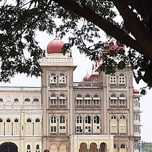
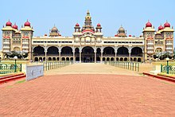

The Mysore Palace, also known as Amba Vilas Palace, is a historical palace and a royal residence (house). It is located in Mysore, Karnataka. It used to be the official residence of the Wadiyar dynasty and the seat of the Kingdom of Mysore. The palace is in the centre of Mysore, and faces the Chamundi Hills eastward. Mysore is commonly described as the 'City of Palaces', and there are seven palaces including this one. However, the Mysore Palace refers specifically to the one within the new fort.
The land on which the palace now stands was originally known as mysuru (literally, "citadel"). Yaduraya built the first palace inside the Old Fort in the 14th century, which was set ablaze and reconstructed multiple times. The Old Fort was built of wood and thus easily caught fire, while the current fort was built of stone, bricks and wood. The current structure was constructed between 1897 and 1912, after the Old Palace burnt down, the current structure is also known as the New Fort. Mysore Palace is one of the most famous tourist attractions in India, after the Taj Mahal, with more than six million annual visitors.
The last palace, now known as the Old Palace or the Wooden Palace, burned to ashes during a wedding in 1896. Maharaja Krishnaraja Wodeyar IV and his mother Maharani Kempananjammanni Devi commissioned the British architect Henry Irwin to build a new palace.[2] E.W. Fritchley worked as a consulting Engineer. Meanwhile, the royal family stayed in the nearby Jaganmohan Palace. Construction was overseen by an executive engineer in the Mysore Palace division. He conducted elaborate architectural studies during his visits to Delhi, Madras, and Calcutta, and these were used to plan the new palace. The construction cost was placed at Rs 41,47,913 (around $30 million adjusted to inflation) and the palace was completed in 1912.
The palace was further expanded in around 1930 (including the addition of the present Public Durbar Hall wing) during the reign of Maharaja Jayachamarajendra Wadiyar.
he architectural style of domes of the palace is commonly described as Indo-Saracenic, with blends of the Hindu, Mughal, Rajput, and Gothic styles The entire Architecture and construction Overseen and inspected by an Executive Engineer Of respective division. It is a three-storey stone structure with marble domes, and has a 145-foot five-storey tower. The palace is surrounded by a large garden. The entrance gate and arch hold the emblem and coat of arms of the kingdom of Mysore, around which the kingdom's motto is written in Sanskrit:
The main complex is 245 ft long and 156 ft wide. There are fire extinguishing machines located in all parts of the palace in order to prevent any fires.[6] The palace has three entrances: the east gate (the front gate, opened only during the Dasara and for dignitaries), the south entrance (for the public), and the west entrance (usually opened only during the Dasara).
The three-storey stone building of a fine grey granite with deep pink marble domes has a facade with several expansive arches and two smaller ones flanking the central arch, which is supported by tall pillars. Above the central arch is a sculpture of Gajalakshmi, the goddess of wealth, prosperity, fortune, and abundance, with her elephants. There are three major exclusive temple buildings within the Old Fort, and about 18 inside the central palace building. The palace was built adjacent to the even older Parakala Mutt headquarters, whose leaders have remained the rajagurus (royal teacher and guide) of Mysore kings. The kings of Mysore were devotees of Goddess Chamundi, hence the palace faces the Chamundi Hills.[7] The palace houses two durbar halls (ceremonial meeting halls of the royal court) and incorporates an array of courtyards, gardens, and buildings.[citation needed]
Mysore Palace viewed from the side.
Granite exterior topped with brilliant pink marble.
Mysore Palace from the front.
Go to this website for your booking : Book now